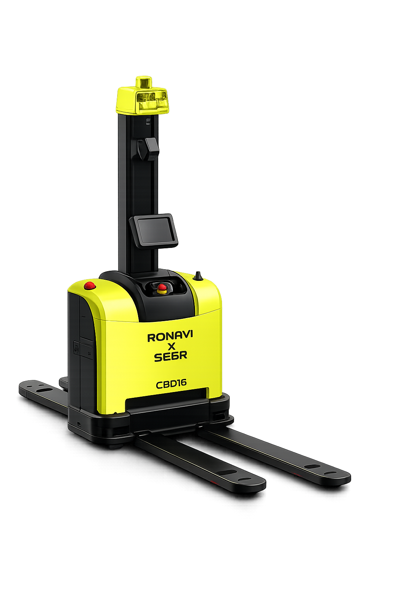
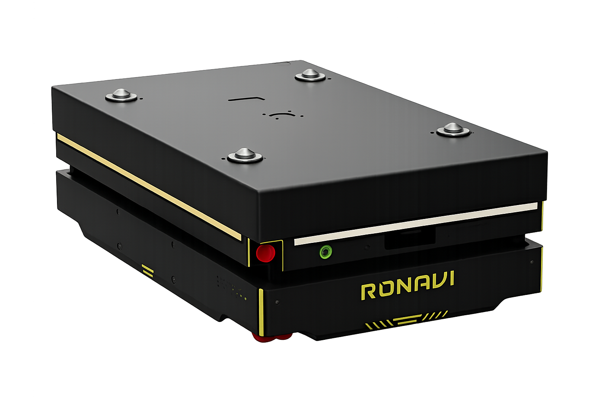
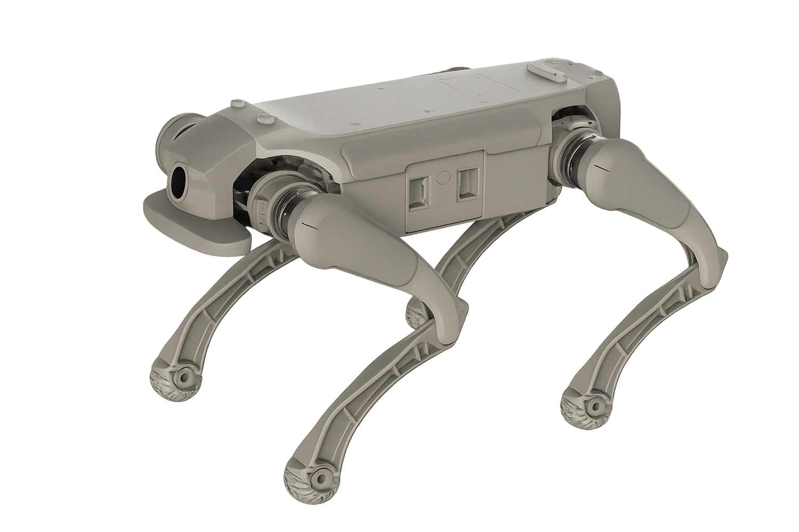
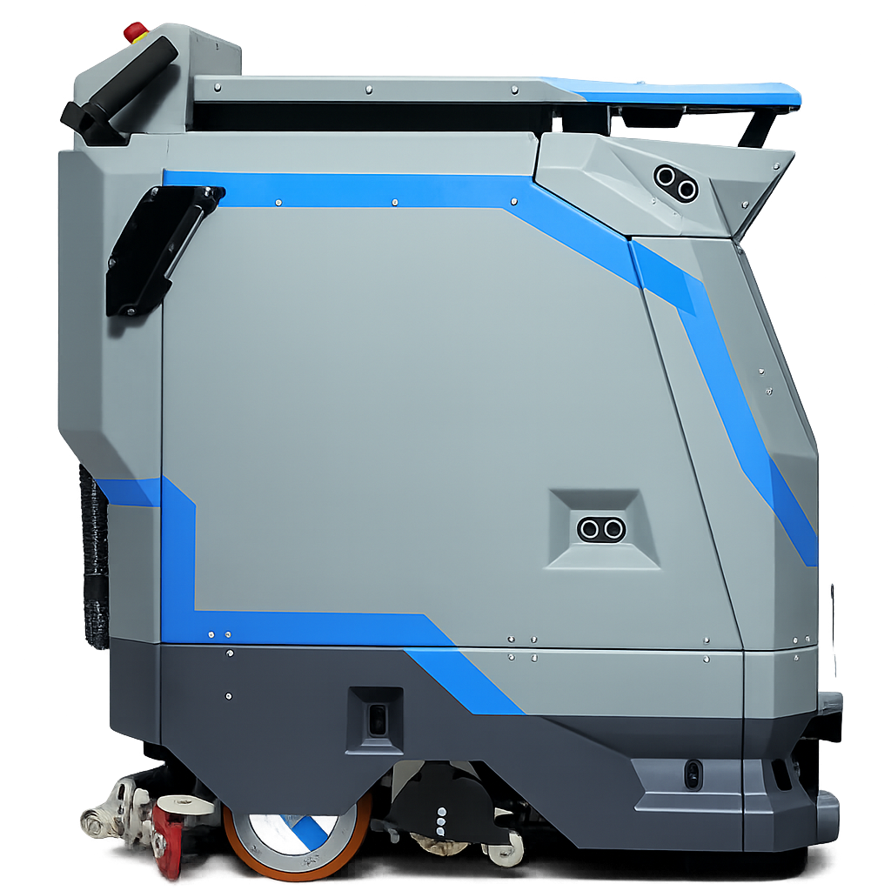

Испытания в реальных условиях
Городская инфраструктура, акватории, воздушное пространство и помещения.

Ronavi × Seer CBD16 Вилочный робот-погрузчик до 1600 кг 1600 кг · 1,8 м/с10 ч
Ronavi H1500 Складской робот до 1500 кг 1500 кг · 1,5 м/с12 ч
Inchbot L1 Робот-собака для R&D и обучения 15 кг · 1,6 м/с2,5 ч
MARK 2 SE Поломоечный робот для торговых залов 2000 м²/ч · 60 л6 чВсе возможности для развития робототехнических решений и подбора готовых технологий собраны в одной экосистеме
Получите ресурсы для разработки робота, развития производства и подготовки первой поставки — от прототипа до реального применения.
Городская инфраструктура, акватории, воздушное пространство и помещения.
Проверка помех, влаги, температуры, вибрации и других сложных условий.
Сопровождение сертификации и работа с экспериментальными правовыми режимами.
Подбор грантов, субсидий и компенсаций затрат на доработку и производство.
Площадки в ИЦ «Сколково» и индустриальном парке «Руднево»: от городской среды до испытаний в воздухе и на воде.
Дороги, тротуары и сложный рельеф
Надводные и подводные системы
Беспилотные аппараты и навигация
Склады, офисы и торговые объекты
Подберём площадку, оборудование и формат испытаний.
Проверьте робота в работе на вашей площадке — с ограниченным периодом, измеримыми результатами и поддержкой на каждом этапе.
Определяем участок и метрики, по которым оценим результат.
Разворачиваем робота и настраиваем его под условия площадки.
Фиксируем эффективность, нагрузку и обратную связь команды.
Переходим к полноценному развёртыванию или дорабатываем решение.
Расскажите о задаче — подберём робота и площадку для теста.
Начните с задачи предприятия, найдите подходящее решение и используйте поддержку города для покупки, интеграции и обслуживания.
Выберите участок — покажем, как задача решается сейчас и что даёт робот.
Начните с задачи предприятия, а не с каталога.
Можно начать с одного инструмента и подключать остальные по мере развития проекта.
Опишите задачу — поможем подобрать решение и формат пилота.
Решения, прошедшие испытания или включённые в реестр: назначение, характеристики и статус видны сразу.
Начните с задачи предприятия — поможем подобрать технологию или найти разработчика.
Пилоты, испытания, соревнования и исследования — материалы о роботизации города в одном месте.
Пришлите ссылку на материал — добавим в подборку.